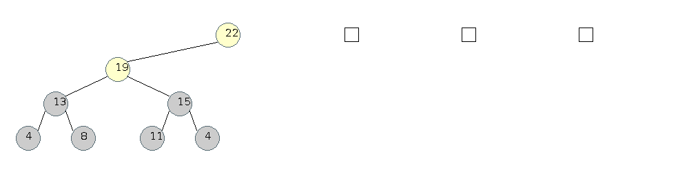
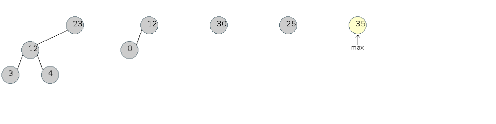
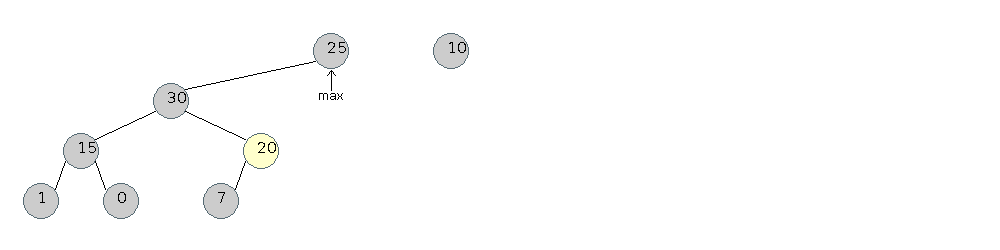

05: restricted containers #2
Priority Queues | Binomial Heaps | Fibonacci Heapsbinomial heaps
A heap based priority queue has efficient (O(lg(n))) insertion and remove the maximum, but cannot do efficient merge. Binomial heaps can solve this.- Left Heap Ordered: The key in each node of a binary tree is larger than or equal to all the keys in that node's left subtree
- Power-of-2 Heap: A left heap ordered tree consisting of a root node with an empty right subtree and a complete left subtree
- Binomial Queue: A set of power-of-2 heaps, no two of the same size.
Joining of two equal-sized power-of-2 heaps
- Start:
- Put the larger roots at the top with that root's left subtree as
the right subtree of the other original root
- Note: this isn't a max heap, this is a left heap ordered binomial tree with the largest element at the root
Joining of two binomial heaps (no carry)
- Start:
- Join
Joining of two binomial heaps (carry)
- Start:
- Join Two 1-Heaps using "Equal Size Join" to create another 2-Heap
- Join Two 2-Heaps using "Equal Size Join" to create another 4-Heap
- Join Two 4-Heaps using "Equal Size Join" to create an 8-Heap
Insertion of a new element into a binomial heap (this is joining of a sized 1 heap with the existing heap)
- Start:
- Join Two 1-Heaps using "Equal Size Join" to create another 2-Heap
- Join Two 2-Heaps using "Equal Size Join" to create another 4-Heap
- Join Two 4-Heaps using "Equal Size Join" to create an 8-Heap

Removal of a maximum in a power-of-2 heap
- Start:
- Removal:
Increase Key
- Start:
- Increase:
- Fixup:
- Fixup:
Decrease Key
- Use fixdown
Delete Internal Element
- Increase Key to beyond Maximum
- Remove Maximum
Fibonacci Heaps
Fibonacci Heaps are Binomial Heaps with delayed merging.Constant Time Insertion
- Start:
- Insert One Element:
- Insert One Element:
- Insert One Element:

Remove Max
- Start:
- Remove Max and Consolidate Two Single Nodes:
- Consolidate Two Double Nodes:
- Consolidate Two Quad Nodes:

Merge Heaps
- Simply Merge and Combine During Remove Max:
- Fix Max:

Increase Key
- Start:
- Increase 8 to 10, Cut Element and Mark Parent:
 - Increase 7 to 26, Cut Element and Mark Parent:
- 20 is Marked, Do a Cascading Cut and Mark the Parent:
- Increase 15 to 40. Cut Children:
- 30 is marked, Do a Cascading Cut:
Priority Queue Time Complexities
| Double List | Binary Heap | Binomial Heap | Fibonacci Heap | |
| insert | O(n) | O(lgn) | O(lgn) | O(1) |
| highest | O(1) | O(1) | O(lgn) | O(1) |
| delete highest | O(1) | O(lgn) | O(lgn) | O(lgn)* |
| delete any | O(1) | O(lgn) | O(lgn) | O(lgn)* |
| merge | O(n+m) | O(nlgm) | O(lg(n+m)) | O(1) |
| sort | O(1) | O(nlgn) | O(nlgn) | O(nlgn) |
* amortized
references
- Adam Drozdek. "Data Structures and Algorithms in C++"
- Algorithms in C++, Parts 1-4: Robert Sedgewick. pages 383-387, 406-414
- Introduction to Algorithms: Cormen, Leiserson, Rivest and Stein. pages 410-411
- Introduction to Algorithms: Cormen, Leiserson, Rivest and Stein. pages 412-415